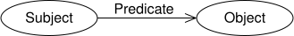
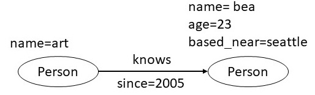
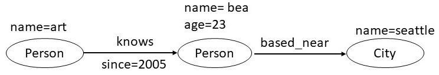
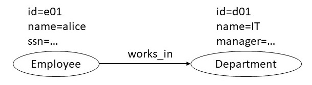

Two popular knowledge graph data models are Resource Description Framework
(RDF), and the property graphs (PG). The query language for RDF
is SPARQL, and the query language for the property graph model is
Cypher. In this chapter, we present an informal overview of both of
these data models and give example queries for them. This chapter
introduces the two models without giving their comprehensive technical
overview. We consider translation of data represented using one of
the models to data represented in the other, and also compare these
graph data models to using a conventional relational data model.
2. Resource Description Framework
RDF is a framework for representing information on the web. The RDF
data model and its query language SPARQL have been standardized by the
World Wide Web Consortium.
2.1 RDF Data Model
An RDF triple, the basic unit of representation in this model,
consists of a subject, a predicate, and an object. A set of such
triples is called an RDF graph. We can visualize an RDF triple as a
node and a directed edge diagram in which each triple is represented
as a node-edge-node graph as shown below.

Figure 1. A subject, predicate, object triple is the building block in an RDF data model.
There can be three kinds of nodes: IRIs, literals, and blank
nodes. An IRI is an Internationalized Resource Identifier used to
uniquely identify resources on the web. A literal is a value of a
certain data type, for example, string, integer, etc. A blank node is
a node that does not have an identifier. It works like an unnamed
placeholder for something exists here without saying exactly
what.
As an example of the information expressed using RDF,
let us take the example of representing knows relationship
between people. In this example, a person with name
art is denoted by the IRI http://example.org/art. In the
notation used below, the IRIs can be abbreviated by defining a
prefix. For example, the prefix foaf stands
for <http://xmlns.com/foaf/0.1/>. Using this prefix, the
knows relation is defined by the IRI
foaf:knows
@prefix foaf: <http://xmlns.com/foaf/0.1/>
@prefix ex: <http://example.org/>
ex:art foaf:knows ex:bob
ex:art foaf:knows ex:bea
ex:bob foaf:knows ex:cal
ex:bob foaf:knows ex:cam
ex:bea foaf:knows ex:coe
ex:bea foaf:knows ex:cory
ex:bea foaf:age 23
ex:bea foaf:based_near _:o1
The last two triples illustrate a literal node and a blank
node. The value of foaf:age is the integer 23 which is an
example of a literal. A string is another common literal data
type. The value of foaf:based_near is an anonymous resource,
represented using a blank node (shown with an underscore). The
identifier o1 is an internal label which has no meaning outside
the current graph.
An RDF vocabulary is a collection of IRIs intended for use in RDF
graphs. These IRIs often begin with a common
substring known as a namespace IRI. In the example
above, <http://xmlns.com/foaf/0.1/> is a namespace IRI.
By convention, a namespace IRI can be associated with a
short name known as a namespace prefix. In the example above, we
defined foaf and ex as name space prefixes.
RDF graphs are atemporal in the sense that they provide a static
snapshot of data. With suitable vocabulary extension, they can express
information about events, or other dynamic properties of
entities.
An RDF dataset is a collection of RDF graphs. It contains exactly
one default graph that can be empty and does not need to have a name,
and zero or more named graphs. Each named graph consists of a name --- an IRI or a
blank node --- and an RDF graph associated with that name.
2.2 SPARQL Query Language
SPARQL (pronounced "sparkle", a recursive acronym for Simple
Protocol and RDF Query Language) is a query language to retrieve and
update data stored in the Resource Description Framework (RDF).
SPARQL can be used to express queries across diverse data sources,
whether the data is stored natively as RDF or exposed as RDF. SPARQL
contains capabilities for querying required and optional graph
patterns along with their conjunctions and disjunctions. SPARQL also
supports extensible value testing and constraining queries by source
RDF graph. The results of SPARQL queries can be sets of RDF
graphs.
Most SPARQL queries contain a set of triples patterns called
a basic graph pattern. Triple patterns are like RDF triples, but
each of the subject, predicate and object can be a variable. A
basic graph pattern matches a subgraph of the RDF data when the variables can be
replaced with RDF terms from the data so that the resulting triples
exist in the graph.
The example below shows a SPARQL query that retrieves the people
people known by a specific person. The query consists of two parts:
the SELECT clause specifies which variables appear in the results, and
the WHERE clause contains the graph pattern to match. In this example,
the graph pattern has a single triple with the variable ?person in the
object position.
Above query returns the following result set on our data graph.
?person1
?person2
<http://example.org/bob>
<http://example.org/cal>
<http://example.org/bob>
<http://example.org/cam>
<http://example.org/bea>
<http://example.org/coe>
<http://example.org/bea>
<http://example.org/cory>
Each solution gives one way in which the selected variables can be
bound to RDF terms so that the query pattern matches the data. The
result set gives all the possible solutions. In the above example, two
different subsets of the data provided the matches that resulted in
the answers. Above examples illustrate a basic graph pattern match;
all the variables used in the query pattern must be bound in every
solution.
SPARQL queries can return blank nodes in the result. The
identifiers assigned to these blank nodes used in the query results
may differ identifiers used in the original RDF graph. The WHERE
clause allows matching specific literal types and to filtering the
results based on conditions such as numerical constraints.
SPARQL queries have various forms. The SELECT form
returns the variable bindings. The CONSTRUCT
form can creates an RDF graph as the result of a query. The
queries can include multiple graph patterns, which can be combined so that all
patterns must match against the RDF data, or only some need to match. The
query results can also be further processed using directives
to order results, remove duplicates, limit the total
number of results returned.
For example, the following query creates an RDF graph marking
people aged 18 or older as adults. It also limits the number of
triples return to 5.
CONSTRUCT {?person ex:isAdult true . }
WHERE {
?person foaf:age ?age . FILTER (?age >= 18) }
LIMIT 5
}
aflac
3. Property Graphs
The property graph data model is used by many popular graph
database systems. Unlike RDF, which was explicitly motivated by a
need to model information on the web, the graph database systems
were motivate by a need to handle general-purpose graph data storage
and analysis. They differ from traditional relational databases in
that they rely little on a predefined schema, and optimize
operations that traverse the graph. In this section, we will explore
the property graph data model and the Cypher language used to query
it.
3.1 Property Graph Data Model
The property graph data model consists of nodes, relationships and
properties. Each node has a label, and a set of properties represented as
key-value pairs, where keys are strings and the values can be of
any data type. A relationship is a directed edge from one node to another;
it also has a label, and may include its own set of properties.
In the property graph shown below, we have two nodes, each of
type Person. Each node has three
properties: name, age and based_near. The nodes
are connected by an edge labeled knows, which has the
property since that indicates the year from which art
and bea have known each other.

Figure 2. A simple property graph schema.
While defining a property graph data model, one must decide which entities are represented as
nodes, which as edges, and which as properties. For example, instead of representing a person's
city as a property, we could represent the city itself as a node, and create an edge
labeled as based_near connecting the person to the city. In
general, any value that may be related to multiple other nodes in the
graph, that we need to access efficiently, or for which we need to associate
addiational properties, should
be represented as a node. In this example, if we intend to
traverse the based_near relationships, the following design
would be more appropriate. This design also allows us to associate
properties with the
based_near relationship, such as, the length of the time a person
has lived in that city.

Figure 3. An alternative design of the property graph
shown in Figure 2 in which instead of representing a city as a
property, we represent it as a node.
3.2 Cypher Query Language
Cypher is a language for querying data in a property graph
database. Its design concepts are being considered for adoption into
an ISO standard for graph query languages. In addition to querying,
Cypher also supports creating, updating and deleting data in a graph
database. In this section, we will focus on Cypher's query
capabilities.
The example below shows the Cypher query against the data graph
considered earlier and queries for the the persons known
by art. The query consists of two parts: the MATCH clause
specifies a graph pattern that should match against the data graph
and the RETURN clause specifies what should the query return. The
graph pattern is specified in an ASCII notation for graphs: each
node is written in parentheses, and each edge is written as an
arrow. Both node and relation specifications include their respective types, and
any additional properties that should be matched.
MATCH (p1:Person {name: art}) -[:knows]-> (p2: Person)
RETURN p2
In the example below, we show the Cypher query that asks for all the friends of
a person that have existed since 2010.
MATCH (p1:Person {name:art}) -[:knows {since: 2010}]-> (p2: Person)
RETURN p2
From the above query, we can see that it is equally easy to
associate properties with relations as it is with nodes. A person
may have friends from years before 2010, and if we wanted the query to
include those friends as well, it can be done by adding a WHERE clause.
MATCH (p1:Person {name:art}) -[:knows {since: Y}]-> (p2: Person)
WHERE Y <= 2010
RETURN p2
Through the WHERE clause, it is possible to specify a variety of
filtering constraints as well as patterns that can be used to
restrict the query results. In addition, Cypher provides language
constructs for counting results, grouping data by values, and
finding minimum/maximum values, and other mathematical and
aggregation operations.
4. Comparison of Data Models
In this section, we will start off by comparing the RDF and the
property graph data models. We will then compare both of them to
relational data model.
4.1 Comparison of RDF and Property Graph Data Models
Beyond the features of RDF considered in the previous section, it
has several additional layers, for example, RDF schema, Web Ontology
Language (OWL), etc. Our discussion here will not consider those
advanced features. The primary differences between the basic RDF
model and the property graph model are that: (a) the property graph
model allows edges to have properties (b) the property graph model
does not require IRIs and does not support blank nodes. To support
the edge properties, the RDF model supports an extension known
as reification. We will consider this extension, and then
describe different ways in which the data represented in either data
model can be converted into the other format.
To understand reification in RDF, consider a situation in which we
need to represent the provenance of the triple shown below. This
triple asserts the weight of an item. The literal "2.4"^^xsd:decimal
denotes the number 2.4 which is of type xsd:decimal. We are interested
in specifying the person who took this measurement.
We can associate provenance information with the above triple using
the RDF reification vocabulary. The RDF reification vocabulary
consists of the type rdf:Statement, and the properties rdf:subject,
rdf:predicate, and rdf:object. Using the reification vocabulary, a
reification of the statement about the weight of the item would be
given by assigning the statement an IRI such as
exproducts:triple12345 (so statements can be written
describing it), and then describing the statement as shown below.
The last triple in the list below specifies the desired provenance
information by asserting the identifier for the person who created
the original triple.
These statements say that the resource identified by the IRI
exproducts:triple12345 is an RDF statement, that the subject of the
statement refers to the resource identified by exproducts:item10245,
the predicate of the statement refers to the resource identified by
exterms:weight, and the object of the statement refers to the
decimal value identified by the typed
literal "2.4"^^xsd:decimal. The final statement asserts
that exproducts:triple12345 was provided by the person with the
IRI exstaff:8574.
With the above reification vocabulary, it becomes possible to mechanically translate
the data in the property graph model to RDF. Each node and its property value in the property
graph data becomes a triple. Each edge in property graph data also becomes an RDF triple.
Every edge in the property graph data that has a property is reified, and the properties
of the edge become the triples of the reified edge that use the reification vocabulary
as explained above.
To translate data expressed in the RDF model to the property graph
model, a straightforward approach is to map each node and an edge
to the corresponding node and an edge in the property graph. A
possible refinement is that we create new property nodes only for
those nodes that are either IRIs or blanks nodes. For any triple in
RDF in which the target is a literal, we make it a property of the
node in the property graph data.
In addition to converting data between RDF and property graph
models, we are also interested in converting the syntactic form of
data and the queries. For property graph model, there is no syntatic
standard for their expression, and therefore, a custom translator
needs to be written for the format one is working with. Once a
translation scheme is fixed between the two data models, the
corresponding translation between SPARQL and Cypher is
straightforward.
4.2 Comparison of Graph Models and Relational Data Model
We can define a translation to and from the data expressed using
relational model to data expressed using the RDF model and the
property graph model. Some argue that the graph models are easier for
humans to understand and that the graph query languages are more
compact for certain queries. In principle, we can implement a user
interface to visualize the relational schemas, and implement a query
compiler that can map a query written in a graph query language into
an equivalent form that operates on the relational tables. If an
application requires navigating relationships,
a graph database has an edge as it is optimized for graph traversals. For the
rest of the section, we will consider an example to illustrate how the
graph queries can be more compact than the corresponding relational
queries, and conclude by mentioning the systems that attempt to
support graph processing on a relational system.
To understand the contrast between graph queries and relational
queries, we will consider a simple example in which we have three
tables: an Employee table, a Department table, and an
Employee-Department join table. An employee can be associated with
multiple departments because of which they are stored in separate
tables. Two tables are related with a join table that contains
their foreign keys employee id and department id. We show these tables
below.
Employee
id
name
ssn
e01
alice
...
e02
bob
...
e03
charlie
...
e04
dana
...
Employee_Department
employee id
department id
e01
d01
e01
d02
e02
d01
e03
d02
e04
d03
Department
id
name
manager
d01
IT
...
d02
Finance
...
d03
HR
...
Given the tables as shown above, suppose we wish to list the
employees in the IT department. The SQL query to perform this task
will first need to join the employee and
the department tables, and then filter the results on
the department name. The required query is shown below.
SELECT name FROM Employee
LEFT JOIN Employee_Department
ON Employee.Id = Employee_Department.EmployeeId
LEFT JOIN Department
ON Department.Id = Employee_Department.DepartmentId
WHERE Department.name = "IT"
If we were to represent the same information using a property graph
data model, we will have a node for department and
employee. The employee ssn and department name
will be the node properties. The
Employee_Department table will be captured using a relationship in the property graph representation. If
the Employee_Department table had additional attributes, they will be
represented as edge properties in the property graph data model. A
sample node in such a property graph is shown below.

We can query this data using the following Cypher query:
MATCH (p:Employee) -[:works_in]-> (d:Department)
WHERE d = "IT"
RETURN p
The Cypher query above is much more compact than its SQL
counterpart. This compactness stems from the fact that the joins
are naturally captured using graph patterns.
There have been some recent systems that represent the relational
data in a schema free manner by representing each node property as a
triple in one table, and each edge property as a four tuple in a
second table. Such systems provide a query planner that accepts
queries in a language like Cypher that computes an efficient
execution plan over the two relational tables. Such systems are able
to leverage the existing relational technology, and are also able to
perform optimizations when some of the legacy data is in a traditional
relational table.
5. Limitations of a Graph Data Model
A graph data model is not the most appropriate choice when the
application contains primarily numeric data, and the reliance on
only binary relationships is limiting. For example, the relational
model is more effective in capturing timeseries data such as
evolution of the population of a country. Even though we can
represent such data using a graph, but it results in a huge number
of triples without necessarily giving us advantages of better
conceptual understanding and/or faster query performance through
graph traversals. There are many relationships that cannot be
naturally represented using binary relations. For
example, between relation that captures that an
object A is between two other objects B and C
is inherently a ternary relationship. A ternary relationship can be
transformed into a set of binary relationships using the
reification technique, but by doing so, we lose the advantage of
better conceptual understanding that we get from the graph data
model. Graphs are also not the most natural representation for
mathematical equations and chemical reactions where easy to
understand domain specific representations exist.
6. Summary
In this chapter, we reviewed two popular graph data models: RDF and
property graphs. RDF was devised for representing information over
the web, and makes an extensive use of IRIs. The property graph
model is a popular choice in many graph database systems, and
provides a direct support for associating properties with both nodes
and edges. Even though there are small differences between the two
models, it is possible to inter-translate the data represented in
one to the other. SPARQL is the query language for accessing data
in RDF, and Cypher is the corresponding language for the data
represented in property graphs. In a graph query language, queries
requiring traversals are much more compact in comparison to an
equivalent formulation in a relational data model. A graph data
model can also provide a better user understanding of the knowledge
in the subject domain. There are some systems that use a relational
database as the storage for graph data and provide query optimizers
to still allow queries to be expressed in a graph query language.
Finally, a graph data model offers significant advantages for
application that have rich relationships between objects, and
require extensive traversal of those relationships.
7. Further Reading
A comprehensive overview of RDF and SPARQL is available in two
existing
textbooks [Allemang
& Hendler 2011]
and [Hitzler,
Krötzsch & Rudolph 2009]. More details on the property graphs
and Cypher are available in a textbook on graph
databases [Robinson,
Webber & Eifrem 2015]. Different ways of translating relational data into knowledge graphs have been investigate [Sequeda & Lasilla 2021]. Different vendors provides tools for
converting data expressed in an RDF data model into property
graphs and vice versa. Two such examples are tools supported by
Neo4j [Neo4j
Labs neosemantics 4.3] and
Oracle [Oracle
Database 21c]. There have been recent attempts to extend the
RDF data model to a variant called RDF* that allows making
statements about triples [Hartig, Kellogg
& Seaborne 2021]. RDF* eliminates the need for reification
while importing the property graph data into an RDF graph.
[Allemang
& Hendler 2011] Allemang, D., & Hendler, J. (2011). Semantic
Web for the Working Ontologist: Effective Modeling in RDFS and
OWL (2nd ed.). Morgan Kaufmann. ISBN 978-0-12-3859655.
[Hartig, Kellogg
& Seaborne 2021] Hartig, O., Kellogg, G., &
Seaborne, A. (2021). RDF‑star and SPARQL‑star: Editor’s
Draft. RDF‑DEV Community Group. Retrieved from W3C Community
Group.
[Hitzler, Krötzsch
& Rudolph 2009] Hitzler, P., Krötzsch, M., & Rudolph,
S. (2009). Foundations of Semantic Web Technologies. Chapman &
Hall/CRC. ISBN 978‑1‑4200‑9050‑5.
[Sequeda
& Lasilla 2021] Sequeda, Juan, and Ora Lassila. Designing and
Building Enterprise Knowledge Graphs. Cham: Springer / Morgan &
Claypool, 2021.
[Neo4j Labs neosemantics 4.3]
Neo4j Labs. (n.d.). Importing RDF Data — Neosemantics (n10s)
4.3*. Retrieved from Neo4j Labs.
[Oracle Database 21c]
Oracle Corporation. (n.d.). RDF Integration with Property Graph
Data Model. Retrieved from Oracle Database Documentation.
[Robinson,
Webber & Eifrem 2015] Robinson, I., Webber, J., & Eifrem,
E. (2015). Graph Databases (2nd ed.). O’Reilly Media. ISBN
978‑1491930885.
Exercises
Exercise 2.1. For the following triple, identify which of the elements is subject, predicate or object.
Exercise 2.2. Which of the following statements is true?
(a)
An anonymous node is the same as a blank node.
(b)
Every IRI is also a URI.
(c)
Blank nodes can never be used outside the RDF document in which they were originally defined.
(d)
An RDF document can refer to identifiers defined in only one namespace.
(e)
An RDF dataset must contain exactly one dataset.
Exercise 2.3. The following SPARQL query illustrates the use of OPTIONAL graph patterns. Within each result returned by this query, what is the minimum and the maximum possible data items it must much:
SELECT ?foafName ?mbox ?gname ?fname
WHERE
{ ?x foaf:name ?foafName .
OPTIONAL { ?x foaf:mbox ?mbox } .
OPTIONAL { ?x vcard:N ?vc .
?vc vcard:Given ?gname .
OPTIONAL { ?vc vcard:Family ?fname }
}
}
(a)
minimum 4 / maximum 4
(b)
minimum 0 / maximum 4
(c)
minimum 1 / maximum 4
(d)
minimum 2 / maximum 4
(e)
minimum 1 / maximum 3
Exercise 2.4. Which of the following statements is true about the property graph data model?
(a)
Nodes and relationships define the graph while properties add context by storing relevant information in the nodes and relationships.
(b)
Property graph defines a graph meta-structure that acts as a model or schema for the data as it is entered.
(c)
The Property graph is a model like RDF which describes how Neo4j stores resources in the database.
(d)
The Property graph allows for configuration properties to define schema and structure of the graph.
(e)
All of the above.
Exercise 2.5. Which of the following Cypher queries will return the actors who directed the movies they acted in?
(a)
MATCH (actor)-[a:ACTED_IN]->(movie)<-[a:DIRECTED]-(actor)
RETURN a
(b)
MATCH (actor)-[:ACTED_IN]->(movie)
JOIN (movie)<-[:DIRECTED]-(actor)
RETURN actor
(c)
MATCH (actor)-[:ACTED_IN]->(movie)
CONNECT (movie)<-[:DIRECTED]-(actor)
RETURN actor
(d)
MATCH (actor)-[:ACTED_IN]->(movie)<-[:DIRECTED]-(actor)
RETURN actor
(e)
None of the above.
Exercise 2.6
. Suppose we wish to associate a confidence of 0.9 with an automatically extracted statement John works for ABC Corporation. Which of the following is true about relative approaches for representing this statement in RDF and property graph data models.
(a)
To represent confidence of a statement, we must reify the statement in both property graph and RDF data models.
(b)
In a property graph data model, we can represent the confidence of a statement as a relationship property.
(c)
We can represent confidence of a statement by reifying it in both property graph and RDF data models.
(d)
The only way to represent the confidence of a statement in an RDF data model is through reification.
(e)
The confidence of the statement cannot be captured in an RDF data model.
Exercise 2.7
. Which of the following statements is true regarding a relational data model and a graph data model?
(a)
A relational database system can be used as a storage mechanism for a graph database.
(b)
It is easier to change the schema in a graph database than in a relational database.
(c)
Queries always run faster in a graph database.
(d)
A graph database is an ideal choice for storing timeseries data.
(e)
Relational data model has a definite advantage if we need to capture relations of arity higher than 2.
Exercise 2.8 Perform the following tasks for the Winterthur graph shown in Figure 2 of Chapter 1.
(a)
Visit http://www.wididata.org. Search for Winterthur, and
click on it to visit the page that gives its detailed
properties. Find the relationships mentioned in Figure 2. Click
on the values of those relationships, and successively navigate
the data until you have visited each node show in Figure 2 of
Chapter 1.
(b)
Visit the Wikidata SPARQL endpoint at
https://query.wikidata.org/sparql. Write a SPARQL query to
extract the triples that appear in the Figure 2 of Chapter 1.
(c)
Use any publicly available tool to visualize the extracted triples for Winterthur.
(d)
Write a Python program to pose the SPARQL queries to the
Wikidata SPARQL server and to visualize the result.
Exercise 2.9 Perform the following tasks using two open-source
systems for creating and querying RDF and property graph
databases. For RDF, you may use the rdflib Python library. For
property graphs, you may use the pypropgraph Python library.
(a)
Use rdflib to create an RDF knowledge graph using the data
that was conisered in the Section 2 of this chapter. Pose the
SPARQL queries considered in the same section.
(b)
Use pypropgraph to create the property graph knowledge graph
considered in the Section 3 of this chapter. Pose the SPARQL
queries considered in teh same section.
Exercise 2.10 Write a translator to perform the following
format conversions. You may test your translator using the data
from Sections 2, 3 and 4.
(a)
Convert RDF data into property graph format.
(b)
Convert property graph data into RDF format, suitiably handling the labels through reification.
(c)
Convert property graph data into RDF* format, suitiably handling the labels through reification.
Exercise 2.11 Identify a suitable public domain data set that
contains employee, department and manager information of the sort we
considered in Section 4.2. Load this data into pypopgraph and any
public domain relational database, and compare their performance on
the query considered in Section 4.2.
 CS520
CS520